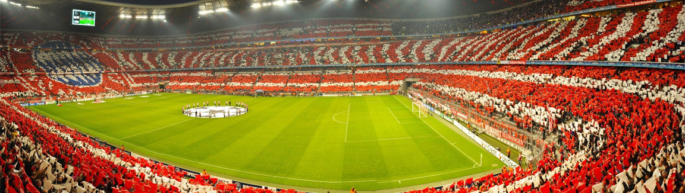

Allianz Arena
Bayern Munich Stadium: A Footballing Fortress
The Bayern Munich stadium, officially known as the Allianz Arena, stands as a testament to the club's dominance in German football and its rich history. With its distinct architecture and vibrant atmosphere, the stadium is an icon of sporting excellence.
Architectural Marvel
The Allianz Arena is renowned for its unique design featuring a façade composed of inflated ETFE plastic panels that can change colors. The stadium's exterior transforms, illuminating in a dazzling display of red, blue, or white, depending on whether Bayern Munich, 1860 Munich, or the German national team is playing.
A Home for Legends
Over the years, the Allianz Arena has witnessed countless memorable matches and hosted legendary players who have donned the Bayern Munich jersey. From Franz Beckenbauer and Gerd Müller to Philipp Lahm and Thomas Müller, the stadium has been the backdrop for astonishing displays of skill and passion.
An Unmatched Atmosphere
The atmosphere inside the Allianz Arena is electric. The sea of red in the stands, with fans passionately chanting and waving flags, creates an awe-inspiring ambiance that fuels the players on the pitch. The sound of thousands of voices singing Bayern Munich anthems echoes through the stadium, captivating all who experience it.
A Venue for Triumphs
Bayern Munich's success on their home turf is unparalleled. The Allianz Arena has witnessed numerous domestic and international triumphs, with Bayern lifting league titles, domestic cups, and the prestigious UEFA Champions League trophy. The stadium has become synonymous with the club's dominance in German and European football.
A Must-Visit for Football Fans
For football enthusiasts, visiting the Allianz Arena is an unforgettable experience. Stadium tours provide a behind-the-scenes glimpse into the club's history, trophy room, and the hallowed player tunnel. Stepping foot on the pitch where footballing legends have graced is a dream come true for many.
Experience the Magic
The Bayern Munich stadium, with its iconic architecture, fervent atmosphere, and rich legacy, encapsulates the essence of footballing grandeur. It is a place where dreams are realized, and where the club's motto, "Mia san mia" (We are who we are), reverberates through every corner. The Allianz Arena truly stands as a footballing fortress, etching itself in the hearts of fans and forever holding a special place in the annals of the beautiful game.
- Munich - Germany.
- 75,000 Spectators.
- Second biggest Stadium stadium in Germany.